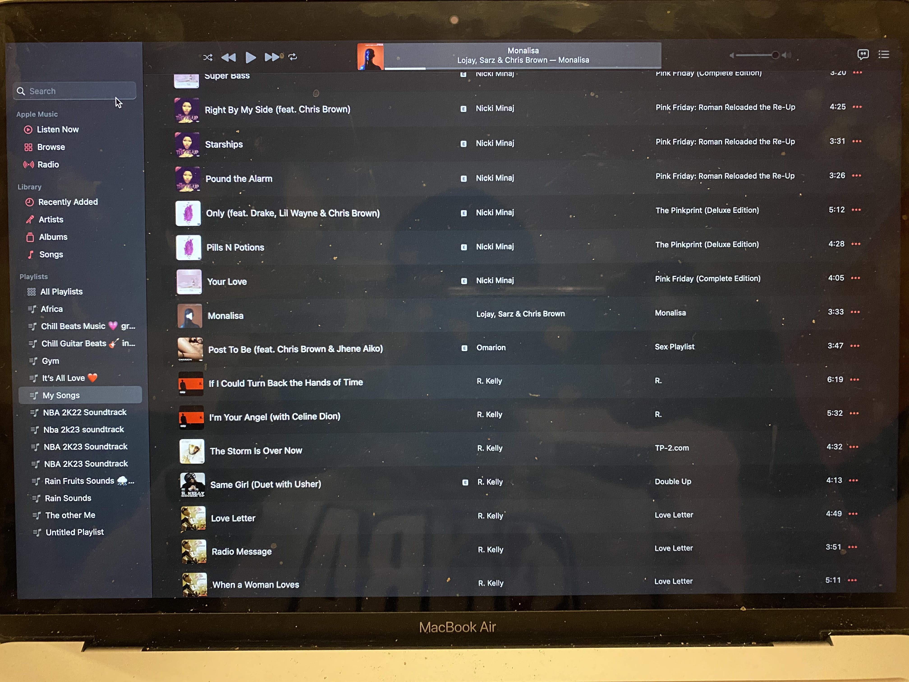

Music plays a big role in my everyday life
I listen to music everyday, and I associated it with almost everything I do. It can be cooking, cleaning, sometimes working, I bring my music everywhere I go. The only time I do not listen to music is either when I am playing video games or doing school work
